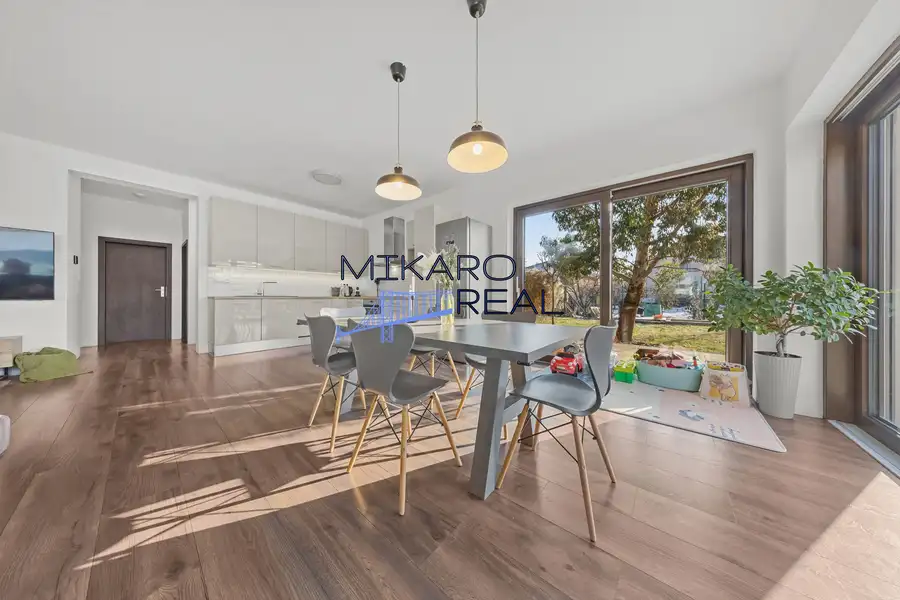
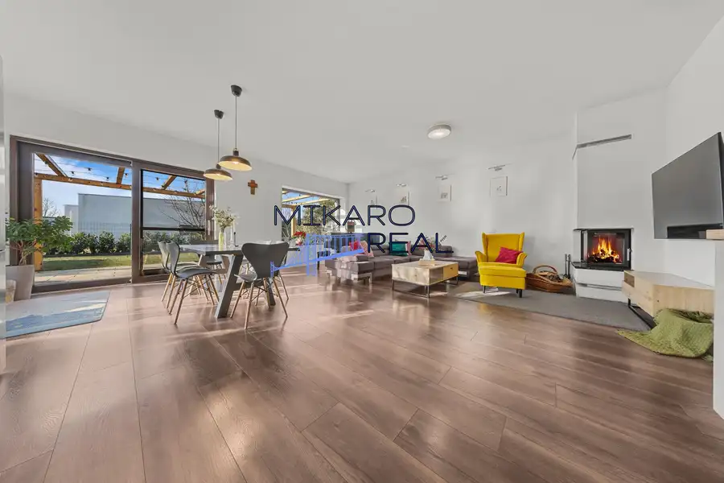
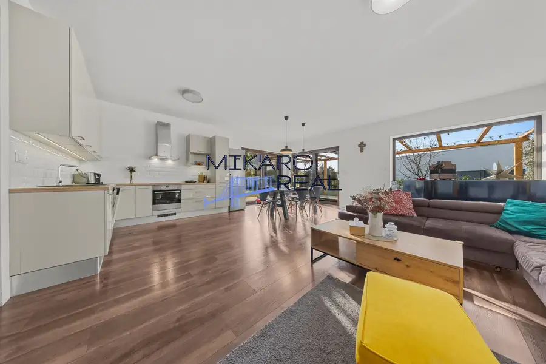
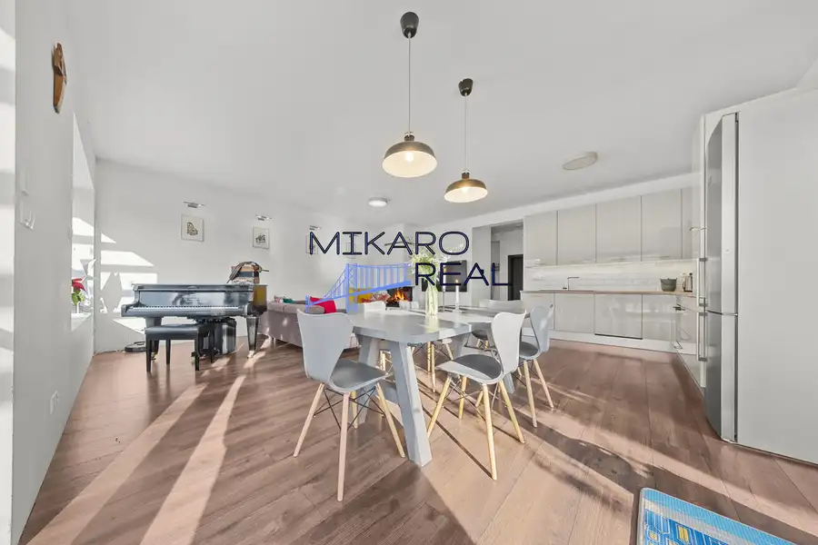
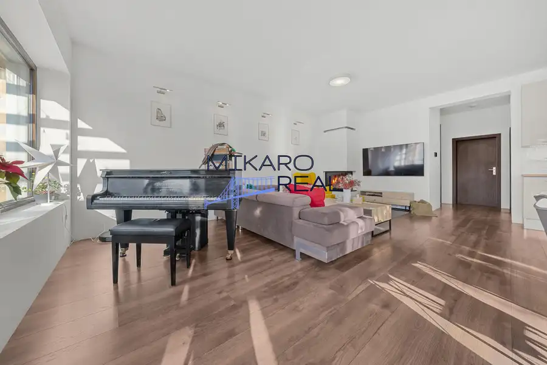
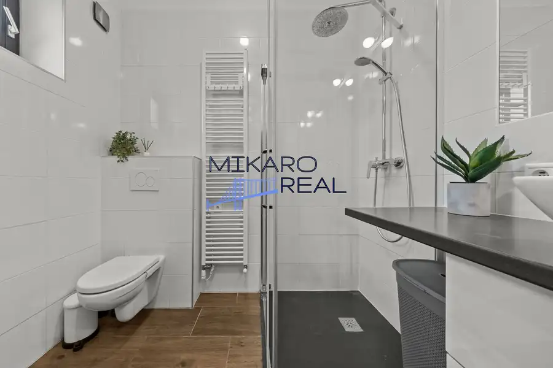

5 izbový rodinný dom v slepej ulici - Hrubý Šúr
Hrubý Šúr







- Plocha170.48 m²
- StavNovostavba
- VlastníctvoOsobné
O nehnuteľnosti
Jedinečná ponuka – 5-izbová tehlová novostavba samostatného rodinného domu v tichej časti obce Hrubý ŠúrTáto ponuka je ideálnou voľbou pre tých, ktorí hľadajú pokojné bývanie v slepej ulici s rodinnou atmosférou a zároveň priestranný, zabývaný 5-izbový rodinný dom s krásne upraveným a veľkorysým pozemkom.Obec Hrubý Šúr, vzdialená len približne 5 km od Senca, ponúka komfortné bývanie vhodné najmä pre rodiny s deťmi. V obci sa nachádzajú potraviny, pošta, pizzeria, kaviareň, pohostinstvo, základná a materská škola, futbalové ihrisko. Kompletná občianska vybavenosť je dostupná v neďalekom Senci. Výhodou je aj autobusové spojenie medzi Sencom a Šamorínom.Základné informácie o nehnuteľnosti•výmera pozemku: 771 m² •zastavaná plocha domu: 134 m² spevnene plochy 50 m² terasa, 70 m² parkovanie pre 2 auta•obytná plocha: 170,48 m²•kolaudácia: 2019•dom má 2 podlažia•vykurovaná garáž: 23,46 m² (predpríprava na fotovoltiku / wallbox)Na pozemku je možné parkovanie ďalších dvoch áut, prípadne aj pred domom pozdĺž oplotenia. Súčasťou pozemku je aj príjemná terasa, v letných mesiacoch prekrytá rákosím.Technické prevedenie a vybavenie•murivo: POROTHERMoobvodové múry domu: 38 cm + 15 cm zateplenieonosné priečky a múry garáže: 25 cm•strecha: pálená škridla TONDACH•teplovodné podlahové kúrenie (plynové) s reguláciou pre každé podlažie•krb s prieduchmi do izieb•drevené okná s trojsklom•elektrické vonkajšie žalúzie, sieťky proti hmyzu•2× francúzske okná s posuvnými dverami z obývacej izby na terasu•elektrická kovaná brána s motorom Hörmann na diaľkové ovládanie•garážová brána Hörmann na diaľkové ovládanie•video vrátnik•ohrev TÚV: kondenzačný plynový kotol so 120 l zásobníkomDom je napojený na vodu, plyn a elektrinu. Optický internet na pozemku. Kanalizácia je v štádiu schvaľovania kolaudačného rozhodnutia, momentálne sa využíva žumpa s objemom 12 m³.Mesačné / ročné náklady na bývanie•elektrina: 40 € / mesiac•plyn: 60 € / mesiac•voda: 160 € / rok•TV a internet (Slovanet): 231 € / rok •smeti: 212 € / rok•žumpa: vývoz cca 1× za 6–7 týždňov Dispozícia domuPrízemie:•vstup cez dizajnové drevené dvere (110 × 230 cm)•zádverie so vstavanou skriňou, vešiakovou stenou a botníkom•kúpeľňa so sprchovým kútom, umývadlom, práčkou a WC•priestranná spálňa so vstupom do šatníka•komora a úložný priestor pod schodiskom•obývacia izba prepojená s kuchyňou a jedálňou (48 m²) so vstupom na terasu a do záhradyPoschodie:•presvetlené dvojramenné schodisko so strešným oknom•dve zrkadlovo otočené izby•kúpeľňa s vaňou, WC, umývadlom a predprípravou na sprchový kút•samostatná technická miestnosť•priestranná detská izbaExteriérNa pozemku sa nachádza studňa, automatický závlahový systém a udržiavaná záhrada s výsadbou ovocných a okrasných drevín (hrušky, slivky, jablone, čerešňa, višňa, broskyňa, moruša, oskoruša, okrasná čerešňa, eukalyptus, olivovník, magnólie a ďalšie). Detská hojdačka a ohnisko so sedením. Zhrnutie a postrehy makléra Ide o veľmi príjemnú a harmonickú nehnuteľnosť, ktorú odporúčam osobne vidieť a zažiť jej atmosféru. Kuchyňa spojená s obývačkou a jedálenskou časťou je o rozlohe menšieho 2 izbového bytu v novostavbách, veľké francúzske okná vytvárajú krásnu svetelnosť a južná orientácia dennej časti domu dodá krásne slnko počas celého dňa. Krb v obývačke dotvorí v zime dokonalú atmosféru a zároveň vykúrite dom. Rozloženie izieb je vhodné napríklad aj pre trojgeneračnú rodinu, nakoľko jedna priestranná spálňa so šatníkom je umiestnená na spodnom poschodí. Dom má dve kúpeľne spojené s toaletami, v spodnej kúpeľni sa nachádza sprchovací kút a vo vrchnej je vaňa a príprava na sprchový kút. Na poschodí sa nachádzajú dve menšie izby aktuálne jedna slúži ako pracovňa, druhá ako šatník a detská izba je tiež veľmi priestranná. Technická miestnosť je rovnako situovaná na poschodí. Priestranný pozemok Vám umožní ho krásne rozčleniť na oddychovú časť, prípadne pre vášnivého záhradkára je tu možnosť realizácie úžitkovej záhrady. Pohodlné parkovanie v samostatnej vykurovanej garáži s elektrickou bránou, prípadne pred garážou kde je priestor pre ďalšie dve autá. Dom sa predáva zariadený a dá sa financovať prostredníctvom hypotekárneho úveru. Cena389 000 € – kompletná cena vrátane všetkých služieb realitnej kancelárieZabezpečíme kompletný právny servis zastrešený advokátkou, katastrálne konanie, pomoc s financovaním, znalecký posudok a asistenciu až po protokolárne odovzdanie nehnuteľnosti a prepis energií.Kontakt:Mgr. Anna Markusová, RSc.akreditovaná realitná maklérka 0910 429 439 markusova@mikaroreal.sk
Parametre
- Doprava
- Diaľkový autobus
- Druh
- Rodinný dom
- Druh domu
- Klasický dom
- Dátum zverejnenia
- 22. 01. 2026
- Energetický certifikát budovy
- nie je
- Plocha pozemku
- 771 m²
- Podpivničenie
- Nedostupné
- Počet garáží
- 1
- Počet izieb / miestností
- 5
- Počet kúpeľní
- 2
- Počet nadzemných podlaží
- 2
- Počet spální
- 1
- Počet vonkajších parkovacích miest
- 2
- Prístupová komunikácia
- Asfaltová
- Rok kolaudácie
- 2018
- Rok výstavby
- 2018
- Stav nehnuteľnosti
- Novostavba
- Telekomunikácie
- Optická sieť
- Terén pozemku
- Rovinatý
- Typ
- Predaj
- Typ konštrukcie
- Tehlová
- Vlastníctvo
- Osobné
- Vybavenie
- Technická miestnosť, Garáž, Vonkajšie parkovacie miesto, Záhrada, Krb
- Vybavenie objektu
- Zariadený so spotrebičmi
- Vykurovanie
- Podlahové, Krb
- Zariadenie
- Čiastočne zariadené
- Zastavaná plocha
- 134 m²
- Úžitková plocha
- 170.48 m²